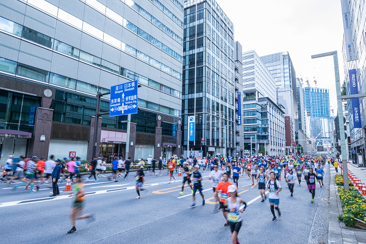
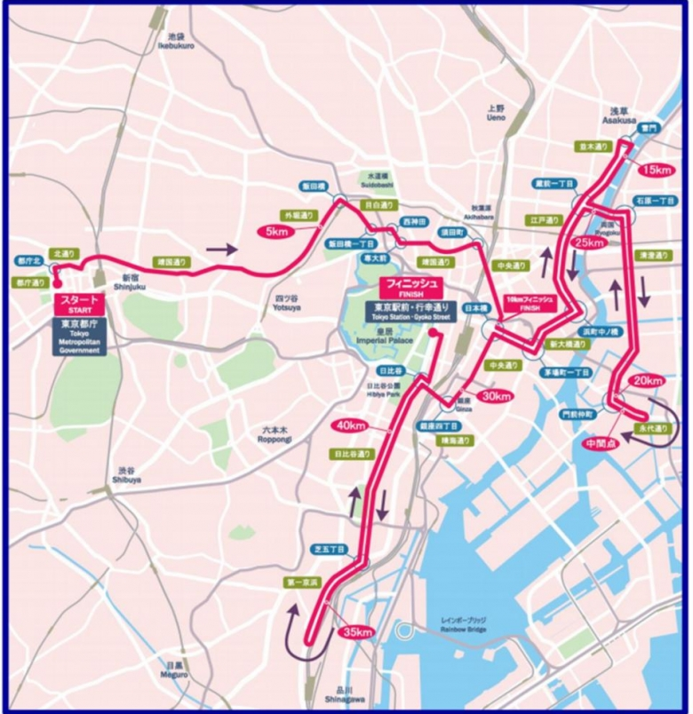
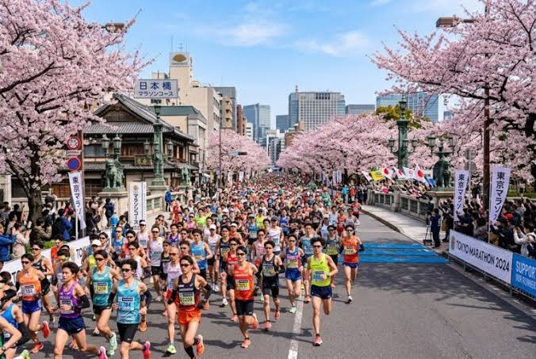

日本東京馬拉松 (Tokyo Marathon)
世界馬拉松大滿貫 (WMM) 亞洲唯一分站 ｜ 全球跑者夢寐以求的最高競速殿堂
創辦於 2007 年，僅用 6 年便於 2013 年躋身世界馬拉松大滿貫第六大成員，與波士頓、倫敦等百年老賽齊名。每年 3 萬多名跑者穿梭於東京都心，以極致秩序感、全平坦快速路況與狂熱街頭加油聲浪聞名全球。
• 雙重賽道設計：前半段皇居文化巡禮，後半段銀座都會衝刺。
• 全民暖心私補：沿途居民自發提供淺草現烤仙貝、熱紅豆湯與銀座和菓子。
• 盛大變裝文化：動漫人物與傳統裝束齊聚，宛如大型城市跑步嘉年華。

賽事基本資訊與核心規格
極致平坦地形與超寬容時限，兼具頂級競速與新手友善雙重特質
• 舉辦月份：每年 3 月第一個星期日。
• 關門限時：7 小時（超寬鬆）。
• 賽事規模：約 38,000 名跑者。
• 累計爬升：約 42 公尺。
• 累計下降：約 67 公尺。
• 地形趨勢：前高後低微下坡平路。
• 路面屬性：全柏油平整城市公路。
• 難度分級：初級（適合各級跑者）。
• 完賽率：歷年常態高達 96% 以上。
• 標籤認證：世界田總白金標籤。
• 聯盟體系：Abbott WMM 六大滿貫。
• 資格採納：成績可作為波士頓 BQ 認證。
賽道結構與關鍵魔王路段
心理學雙重賽道設計：前半程文化熱身，後半程迎戰關鍵橋樑爬坡
• 0-5km（下坡開局）：新宿至飯田橋海拔由 35m 降至 15m，順坡切忌爆衝。
• 5-20km（文化巡禮）：神保町、皇居、品川與銀座，路面極平，群眾聲浪最熱情。
• 20-30km（折返考驗）：淺草雷門遠眺晴空塔，藏前至門前仲町需專注配速。
• 35-42.195km（終點衝刺）：豐洲回轉進入東京站前行幸通，紅磚車站衝線。
• 坡度結構：海拔自 3m 上升至 12m，坡長約 300 公尺。
• 痛點剖析：恰逢撞牆期體能臨界點，看似微小的上坡會帶來強烈沉重感。
• 通關策略：提前 100m 減速換檔，縮小步幅並提高步頻，切忌強發力硬衝。

報名管道與搶票四大途徑
中籤率僅約 8%～12% 的「萬中選一」賽事，全面掌握四種名額獲取渠道
• 登記時程：每年 8 月中下旬開放登記。
• 放榜時間：每年 10 月上旬公告中籤名單。
• 錄取機率：海外一般跑者中籤率約 8%~12%。
• 參賽費用：海外跑者 25,300 日圓。
• 運作機制：向大會指定公益組織捐款。
• 捐款門檻：約 100,000 至 200,000 日圓起。
• 資格特性：名額有限，採先報先得額滿為止。
• 名額保障：保證免抽籤直接參賽。
• 合作模式：授權國際旅行社（ITO）販售。
• 套裝內容：保證名額＋指定飯店＋專車接駁。
• 總體花費：單人費用通常較高。
• 適合對象：無暇規劃繁雜後勤的跑者。
• 直通計畫：Run as One 半菁英直通。
• 成績標準：男子全馬 2:21 內、女子 2:52 內。
• 認證要求：需持有指定國際公認賽事成績證明。
• 名額特點：免抽籤、起跑分區排於最前列。
交通後勤、住宿選址與領物避坑
非環狀賽道的越洋物流佈局：從起點新宿到終點東京車站的無縫銜接
• 起點位置：新宿東京都廳（搭乘 JR 山手線或大江戶線至都廳前站）。
• 終點位置：東京車站前行幸通（鄰近大手町與東京站）。
• 兩地關聯：起點與終點相距約 8 公里，搭乘東京地鐵丸之內線約 20 分鐘直達。
• 首選區域 A（新宿）：起跑日早晨可直接步行至起跑集結區，避開擁擠地鐵。
• 首選區域 B（丸之內 / 神田）：距離終點極近，完賽後能以最快速度回房洗熱水澡與更衣。
• 通盤考量：建議鎖定「山手線沿線」飯店，大幅降低清晨轉乘壓力。
• Expo 地點：東京國際展示場（Tokyo Big Sight）。
• 領物時限：賽前連續三天開放，比賽當日不設現場領物。
• 核驗規範：必須本人攜帶護照親領，嚴格禁止任何形式代領。
• 寄物規定：需提前付費選購官方指定寄物袋，現場設嚴格安檢。
氣候數據、穿著建議與特色私補
冬末初春的低溫應對策略，以及賽道沿途不可錯過的日式美食盛宴
• 氣溫區間：3°C 至 14°C（平均約 8°C）。
• 濕度水平：40% 至 70%（平均約 55%）。
• 風速均值：2 至 5 m/s。
• 降雨機率：約 20% 至 40%。
• 上身穿搭：短袖排汗衫 ＋ 可卸式袖套（方便隨溫度調節）。
• 下身穿搭：壓縮長褲或路跑短褲 ＋ 壓縮小腿套。
• 配件防護：薄防風手套、遮陽帽（防小雨兼保暖）。
• 保暖秘訣：起跑區穿著可丟棄之舊外套或雨衣，起跑後丟入大會回收箱。
• 官方補給：全線提供水、電解質運動飲料、能量膠與香蕉。
• 淺草寺私補：沿線熱心居民準備現烤仙貝與熱騰騰紅豆湯。
• 銀座路段私補：老字號高級和菓子名店慷慨提供精緻迷你羊羹。
• 環保守則：飲水紙杯需果斷投入指定分類桶，維持賽道整潔。
賽後文化巡禮與系列下一站
掛上沉甸甸的大滿貫獎牌，洗淨疲憊、大啖串燒，並啟航探索更多世界絕景
• 大手町溫泉排酸：距離終點東京站步行可達，泡天然溫泉洗去 42 公里乳酸。
• 有樂町高架下居酒屋：賽後換上輕便服裝，與跑友大啖日式炭烤串燒與冰生啤酒慶功。
• 翌日漫步散策：漫步皇居護城河或淺草雷門，慢跑慢走動態排酸，回味昨日激情賽道。
